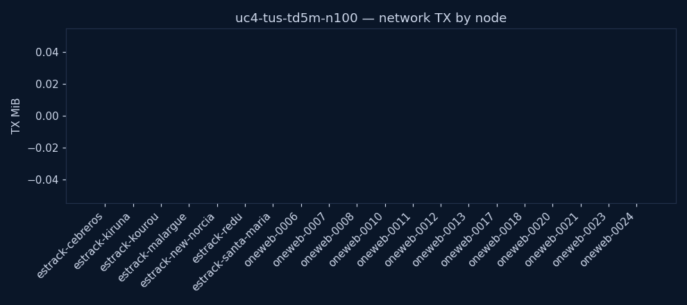

uc4-tus-td5m-n100
tus
TimedOut
| parameter | value | unit | description |
|---|---|---|---|
| engine | tus | — | Storage/transport engine under test (edfs or tus) |
| file_size | ? | — | Size of the produced photo file |
| priority | - | — | File priority class (low/default/high; EDFS PAR) |
| sat_count | 100 | sats | Number of satellites in the constellation |
| t_destroy | 5m | — | UC4: time from photo capture (≈t0) to the producer's Destroy event — the dt KPI axis |
| KPI | value | unit | description |
|---|---|---|---|
| state | TimedOut | — | Terminal experiment state (Success/TimedOut/Failure) |
| exec_date | 2026-06-09 04:33 UTC | UTC | Wall-clock date/time the experiment was launched (CR creationTimestamp) |
| duration | 15m 0s | — | Experiment duration on the simulation clock (simulationStartTime → experimentTime) |
| sim_start | 2026-05-16 23:59 UTC | UTC | Simulation clock at experiment start (simulationStartTime) |
| sim_end | 2026-05-17 00:14 UTC | UTC | Simulation clock when the experiment finished (experimentTime) |
| delivered | no | — | Whether the photo reached any ground station (UC4 success criterion) |
| first_GS_delivery_s | n/a | s | Time from sim start until the first produced file reached any ground station |
| produced | 0 | files | Files produced by the producer agent(s) |
| GS_reached | 0 | count | Ground stations that received the file (from received_total — independent of the delivery-time metric) |
| distinct_receivers | 0 | count | Distinct nodes that received a file (GS + relays) |
| TX_MiB | 0 | MiB | Total network bytes transmitted, all nodes |
| peak_cpu_m | 20 | millicores | Peak CPU across all containers |
| peak_mem_MiB | 13 | MiB | Peak memory across all containers |
| notes | — | — | Data-quality flags for this run (missing metrics, undelivered files) |
Node colours are consistent across every chart and the graph: ■ ground station · ■ relay satellite · ■ producer.
